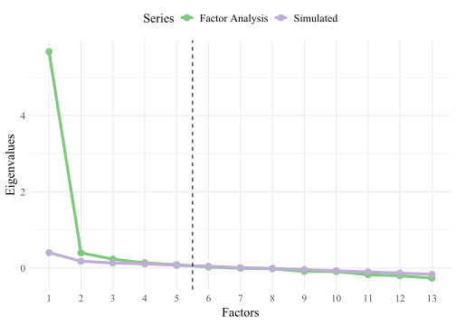

| Subtest | Primary Influence | Secondary Influences |
|---|---|---|
| Social Communication | ||
| Comprehension of Body Language and Vocal Emotion | Knowledge of Behavioral Content | |
| Social and Language Inference | Language Development | Knowledge of Behavioral Content |
| Situational Language Use | Communication Ability | Knowledge of Behavioral Content |
| Elicited Body Language | Knowledge of Behavioral Content | |
| Expressive Language | ||
| Expressive Labeling of Vocabulary | Lexical Knowledge | |
| Expressive Skills for Describing and Explaining | Associational Fluency | General Knowledge |
| Narrative Skills | Associational Fluency | Meaningful Memory |
| Expressive Use of Basic Morphology and Syntax | Communication Ability | Grammatical Sensitivity |
| Receptive Language | ||
| Comprehension of Vocabulary | Lexical Knowledge | |
| Comprehension of Oral Directions | Listening Ability | Working Memory Capacity |
| Comprehension of Stories & Questions | Listening Ability | Meaningful Memory |
| Comprehension of Basic Morphology & Syntax | Listening Ability | Grammatical Sensitivity |
| Executing Oral Directions | Listening Ability | Working Memory Capacity |
Introduction
Conflict of Interest Statement: ATP Assessments, the publisher of the RESCA-E, commissioned me to write a descriptive account of the likely relations among the RESCA-E subtests and CHC Theory constructs. I billed them for the hours that I spent researching this topic and writing my thoughts on the matter. However, I was so impressed the the RESCA-E that I wanted to write a short review of it, and I also conducted additional analyses about its structure. Because ATP Assessments did not ask for my opinion about the quality of the RESCA-E nor for the statistical analyses I conducted, I did not bill for the many additional hours I spent on these activities. If I were not impressed with the RESCA-E, this document would have been much shorter.”)
The Receptive, Expressive & Social Communication Assessment–Elementary (RESCA-E) is a new measure of language abilities for children in the elementary school years. The purpose of this review is to evaluate the RESCA-E in terms of the Cattell-Horn-Carroll Theory of Cognitive Abilities [CHC theory; McGrew (2005); Schneider & McGrew (2012)]. However, some preliminary remarks about the test’s design are in order.
First Impressions
Modest elegance, by its nature, attracts little praise. I will do my part here to rectify this injustice. The RESCA-E test materials, stimuli, and protocols are designed for practical efficiency but sacrifice nothing in aesthetic appeal. This might not seem to matter, but it does. Spending time with ugly, frustrating test materials makes one yearn for early retirement.
The application of sound typographical principles has enhanced the readability and ease of use of the protocol; the whole document is thoughtfully coded by font, color, and shading. The protocol does not feel cramped; it has generous space for notes, yet no space is wasted. Sure, the designers could have shortened the protocol by making everything smaller and more compact, but that would have been penny wise, pound foolish. This same care and consistency was extended to everything in the test kit.
Looking Deeper
I do not know the test’s authors, Patricia Hamaguchi and Deborah Ross-Swain, and I have had no contact with them. Yet, I can tell something about their work process and their scholarly values. To someone who has never tried to design an ability test, it may not be obvious that the RESCA-E subtest items were labored over for untold hours until they were just right. In most test batteries I find several items (or whole subtests) that seem a bit off, like bum notes in a singer’s solo. I found none here. The items are so smoothly written that they draw no attention to themselves—no small feat.
Even more importantly, the item content reflects a deep understanding on the part of the authors of what matters in the evaluation of children. No item is merely easy or merely difficult, chosen to meet some psychometric need. No, each item is intended to measure something substantial and relevant to everyday functioning. A rare patience was required to keep working with each item until it was easy to understand, quick to administer, and simple to score, all the while remaining clinically relevant, yet psychometrically sound. For this accomplishment, Patricia Hamaguchi, Deborah Ross-Swain, and their associates at ATP Assessments deserve a tip of the hat and hearty congratulations.
CHC Theory: A Work in Progress
Because a complete description of CHC theory can be found in Schneider and McGrew (2012), no space will be wasted on a summary here. Figure 1 displays the broad abilities arranged conceptually.

CHC theory is largely based on John Carroll’s (1993) Three-Stratum Theory of Cognitive Abilities.1 Because it was based on all the factor-analytic evidence available at the time, Carroll’s synthesis created more consensus in the the field of individual differences in cognitive abilities research than any previous work. However, this strength was also its weakness—one that Carroll (1998, 2003) was candid about. Because his theory was based on all the world’s existing data sets, his theorizing process was necessarily exploratory. None of the data sets were designed explicitly to confirm or disconfirm his theory. No one was more aware that the Three-Stratum Theory was incomplete than Carroll (1998) himself:
1 Carroll’s conceptualization drew heavily from John Horn’s taxonomy of intelligence, which was an elaboration of Raymond Cattell’s theories, which extended Spearman’s model, which was a work of singular genius.
Whether or not my book on human cognitive abilities can be regarded as an important milestone in its field, I hope that it can at least serve as a guide and reference for future researchers. However, I also think that my book leaves much to be desired, in that it fails to answer a plethora of fundamental questions about cognitive abilities—their structure, sources and meanings. (p. 22)
With Carroll’s passing in 2003, it now falls to us to trim the parts of Carroll’s theory that are inaccurate and supplement those parts that are admittedly incomplete. CHC theory represents such an effort. Although this creative synthesis was instigated by the tireless wizard, Kevin McGrew, CHC theory is a constantly evolving theory and anyone can participate in its upkeep. Schneider & McGrew (2012) issued this standing invitation:
CHC theory is put forward as a candidate for a common framework for cognitive abilities researchers. All are invited to help build it, and anyone is entitled to try to knock it down by subjecting it to critical tests of its assumptions. (p. 100)
When CHC theory was new, considerable effort was necessarily devoted to retrofitting the meaning of old tests to the new framework (Schneider & Flanagan, 2015). With new tests like the RESCA-E, we should resist the urge to fit each innovation into an existing slot in the CHC taxonomy. Nevertheless, if there are places where the fit is comfortable, it should be acknowledged so that future research with the RESCA-E can more easily build on existing knowledge. I therefore turn to an examination of each subtest of the RESCA-E and speculate how it might relate to CHC narrow and broad abilities.
Receptive Language Subtests
Comprehension of Vocabulary
The examiner shows four drawings to the examinee and says a word. The examinee points to the one best depicts the word.2 The advantage of this format is that it cleanly measures the CHC narrow ability Lexical Knowledge, a facet of Comprehension/Knowledge (Gc). The “disadvantage” of the multiple choice format is that its loading on general intelligence is likely to be smaller than with tests with more open-ended formats (e.g., WISC-V Vocabulary). Why? No judgment is required to decide which aspects of a definition to emphasize. Wechsler’s (1958) goal was never to measure things like knowledge per se, but to measure intelligence in all its integrative, glorious complexity.3 However, when your goal is to measure word knowledge, not judgment, this item format is exactly what you want.
2 Similar to the Peabody Picture Vocabulary Test, Fourth Edition and the Receptive One-Word Picture Vocabulary Test-4
3 Wechsler (1958, p. 15) wrote, “Then, when an examiner employs an arithmetic or a vocabulary test as part of an intelligence scale, the object of the examiner is not to discover the subject’s aptitude for arithmetic or extent of his word knowledge, although these are inevitably involved, but his capacity to function in overall areas which are assumed to require intelligence.”
All picture vocabulary tests start with simple objects one encounters frequently (e.g., spoon, ball, dog). Where the test designers go from there matters quite a bit. There are two ways to make a picture vocabulary test more difficult:
- Show pictures of increasingly unusual objects (e.g., fob, lappets, ait, manometer).
- Show pictures illustrating increasingly complex concepts (e.g., relieved, hesitant, shrewd, intimacy) or increasingly subtle distinctions between related words (e.g., ask vs. beg, sad vs. sobbing, consider vs. ponder).
Which approach do you think is more applicable to everyday life? Me, too. Fortunately, this is the approach that the RESCA-E takes, with more difficult items focusing mostly on emotions, interpersonal relations, measurements, and abstractions. None of the words are particularly unusual, technical, or esoteric.
Comprehension of Oral Directions
This measure is similar to the Comprehension of Vocabulary subtest in its format. The examiner shows four drawings to the examinee and says a sentence that contains an instruction. The examinee chooses the picture that is consistent with the instruction. For example, the sentence might be, “You may not ride bicycles in the park.” The four pictures might be various configurations of a child, a bicycle, and a park. The correct answer might be a picture of child in the park with a bicycle chained outside its gates.
The items of this test are ingeniously designed to avoid problems in similar tests of oral direction comprehension. Some tests give increasingly long directions that tax working memory instead of comprehension per se.4 This subtest minimizes working memory load by presenting directions that rarely have more than three parts. Items become increasingly difficult mostly because of the complexity of the command rather than its length.5
4 Which is fine, if we wish to measure the degree to which working memory deficits interfere with comprehension.
5 For example, “Write a letter that has only curved lines or only straight lines, but not both kinds of lines. Which letter could be written? [shows letters] B, D, O, or P”
6 You might ask, “If CHC theory has holes in it, why not just fill them?” Good question. Theory building, especially the assembly of a comprehensive taxonomy, must be a slow, deliberate, systematic process. Adding new features that are not well validated into the taxonomy will undermine trust in its utility.
In terms of CHC theory, it appears that this subtest measures Listening Ability, a facet of Gc. However, it seems likely that Carroll’s Listening Ability factor comprises multiple subfactors, and that this subtest measures a narrow subset of them (e.g., understanding of English syntax). Thus, the model of language that underlies RESCA-E is more elaborated than the model of language ability in CHC theory. Ideally, research using instruments like the RESCA-E will refine and extend CHC theory’s treatment of language abilities.6
Comprehension of Stories and Questions
In this subtest, the examiner reads a short story to the examinee and asks questions about the examinee’s understanding of it. For each question, there are four possible answers that the examinee can point to (either words that the examiner reads aloud or pictures that are shown). The passages are carefully crafted to be stories rather than barely concealed lists of random details and events. To answer the questions correctly, the examinee must understand the gist of the story rather than recall highly specific details. Thus, it is a true comprehension test rather than a memory test.
Comprehension of Stories and Questions is, like Comprehension of Oral Directions, a measure of Listening Ability, but less about syntax and more about semantics. To some degree, it is also a measure of Meaningful Memory (Gl).
Comprehsion of Basic Morphology and Syntax
Like the other receptive language subtests, this supplementary subtest is a multiple-choice test. It is cleverly designed to measure a child’s understanding of syntax and morphology. For example, to measure one’s understanding of plurality, the prompt could be “The birds are swimming.” The child has to choose among pictures of birds swimming, but only one picture has more than one bird. In similar fashion, understanding of a variety of other features of English are tested: past vs. present vs. future tense, negation (e.g., none, not, never), prepositions (e.g., on, in, above, between), gender (he vs. she, him vs. her), singular vs. plural, self vs. other (me vs. her), before vs. after, active vs. passive voice (e.g., the boy touched the dog, the boy was touched by the dog).
This subtest is another measure of Listening Ability but with a focus on syntax. From the name of Carroll’s Grammatical Sensitivity factor, it might seem that this is what Comprehension of Basic Morphology and Syntax measures. However, the Grammatical Sensitivity ability factor was a measure of formal knowledge of grammar. Obviously, knowing formal grammatical rules will help on this test but that is not what is being measured here directly.
Executing Oral Directions
This supplementary test is of obvious importance. It can resolve questions such as, “Does the child understand simple commands?” The subtest is similar to and is most correlated with Comprehension of Oral Directions (r = .52). It differs from that test in that it is not a multiple-choice test. Instead, it requires the examinee to follow simple commands at first (e.g., “Touch your knee. Go.”) and increasingly complex sentences at the end of the test (e.g., “Stand up and walk to the door. When you get there, knock on it three times or open it, but not both. Go.”). Near the end of the test, the commands are long and thus the working memory demands are high.
Expressive Language Subtests
Expressive Labeling of Vocabulary
Like the Comprehension of Vocabulary subtest, this test measures Lexical Knowledge. On some items examinee is asked what object is in a picture. In many confrontational naming tests, the objects in the pictures become increasingly unusual. Not so, here. As with the Comprehension of Vocabulary subtest, the pictures measure knowledge of words related to abstract concepts, emotions, and interpersonal relations.
Although Comprehension of Vocabulary (CV) and Expressive Labeling of Vocabulary (ELV) have the highest correlation of all the RESCA-E subtests (r = .6), the correlation is not so high that they are redundant. In my opinion, the RESCA-E should have a Vocabulary composite score consisting of these tests. Using formulas explained in Schneider (2013), you can compute a custom vocabulary composite score like so:
Vocabulary Composite = 2.795(CV + ELV) − 44.1
Expressive Skills for Describing and Explaining
Guilford (1967) distinguished between tests requiring convergent production (i.e., a single answer is correct) and tests requiring divergent production (e.g., the examinee gives as many correct answers, such as naming as many ice cream flavors as possible within the time allotted). Cattell originally grouped divergent production tests with crystallized intelligence. The reason for this is that his tests had generous time limits so that the tests were measures of how much information was in the person’s knowledge banks instead how fast it could be pulled out of memory. The results will be quite different if one is given 1 minute to name as many words as possible ending in -tion compared to the same task but with a 5-minute time limit. With generous time limits, the test becomes more like a breadth-of-vocabulary test rather than a memory retrieval speed test. Almost all commercially available tests of divergent production have short time limits and thus function as memory retrieval speed tests.
In this subtest, the examinee is shown a picture (e.g., a family preparing a meal) or given a scenario (e.g., a child getting ready for bed) and the examinee is prompted to tell the examiner everything he or she knows about this situation. Unlike many divergent processing tests (e.g., COWAT), the child does not get 1 point for every answer. Instead there is a checklist of criteria for scoring points. In general, the examinee is awarded points for mentioning aspects of the picture or scenario that are most salient or of central importance.
This is a test paradigm I have never seen before. If it is indeed novel, it is potentially a major advance. It is rare in life to have to name as many exemplars of a category as possible (e.g., sports, furniture, animals, words that begin with H). In contrast, spontaneously describing the most salient aspects of a situation is a hallmark of intelligence. I look forward to seeing validation efforts to evaluate this paradigm’s utility.
This subtest has relatively small correlations with the other tests (r in the .2–.3 range), suggesting that it is not merely a Gc test, though it is undoubtedly influenced by Gc. In CHC theory, there is a little-understood narrow ability called Associational Fluency in the Gr (Memory Retrieval Fluency) broad ability cluster. It is distinguished from the better-known Ideational Fluency factor in that the quality of the responses matters more than the number. Given how points are awarded for mentioning important aspects of a picture or scenario, it seems likely that this is what is being measured. It also seems like that having general knowledge, an intermediate factor within Gc, would help a person perform well on this test.
Narrative Skills
In this subtest, the examinee is prompted to tell the gist of a narrative that the examiner read. Another type of item involves telling the examiner about an experience (e.g., taking a long trip in a car or bus). As with the Expressive Skills for Describing and Explaining subtest, the examiner scores the response for the quality of the answers, not for how much is said. It may sound from this description that this subtest is a bear to score, but it is quite straightforward.
The Narrative Skills subtest is most highly correlated with Expressive Skills for Describing and Explaining. It seems likely that it too is a measure of Associational Fluency. It does not seem to draw on background knowledge to the same degree and instead requires Meaningful Memory. Supporting this interpretation is the fact that its second-highest correlation is with Comprehension of Stories and Questions, which is also hypothesized to be influenced by Meaningful Memory.
Expressive Use of Basic Morphology and Syntax
In this subtest, the examiner prompts the examinee to answer questions about pictures. The questions are cleverly worded so that the examinee’s answers are expected to conform to certain syntactical rules (e.g., “This girl here is running. What is this other girl doing? Answer: Walking”).
Given the similarity in names, it seems reasonable to suppose that this subtest would be strongly correlated with Comprehension of Basic Morphology and Syntax. Its correlation is only r = .45, a value that is similar to the correlations it has with many other subtests. Factor analyses of the RESCA-E reveal no evidence that there is a special relationship between these two measures of morphology and syntax understanding. Examining the pattern of critical difference scores in the Technical Manual, it appears that the correlation between these two tests decreases with age. Why this happens deserves scrutiny. One likely explanation is that both tests have very low ceilings for older children, which means that the scores are imprecise for children with average or better understanding of morphology and syntax.7
7 A test with a low ceiling does not have enough difficult items to distinguish reliably among high-ability examinees. Low ceilings are a major problem for intelligence tests, but are not so problematic for tests like the RESCA-E, which are designed to identify children with language deficits rather than designed to identify the superstars of syntactic sophistication.
In terms of CHC theory, it appears that this subtest measures aspects of Communication Ability, a little-researched factor. As with Comprehension of Basic Morphology & Syntax, it seems likely that Grammatical Sensitivity also influences performance on the test.
Summary of Influences on RESCA-E Performances
Table 1 summarizes my hypotheses about which CHC narrow abilities are measured by each RESCA-E subtest. Evidence is cruel to armchair speculation, and the probability that I am right in every case is low. There are two kinds of errors I might have made. First, it is possible that some other CHC narrow ability is a more important influence on test performance than what I have listed. Second, it is possible that CHC theory simply does not have the right categories to characterize what the RESCA-E subtests measure. There is a reasonable chance I have made few or no errors of the first type. However, it is certain that errors of the second type have been made, particularly with respect to the Social Communication subtests.
The Structure of the RESCA-E
It is telling that only in the language domain did Carroll offer elaborate speculations that went substantially beyond his data. Carroll was, if anything, an expert in language abilities, having studied them intensely since the beginning of his career in the 1930s. He knew that the available data sets, rich and varied as they were, could not capture all of what he suspected was true of language abilities. For example, although the distinction between receptive language and expressive language could not be verified directly with the available data, he made the distinction nonetheless (Carroll, 1993, p. 147).
The fact that we comprehend language and we communicate via language is so obvious a distinction that we simply do not care how the factor analyses shake out. Since the early work of Wernicke and Broca, we have known that damage to certain areas of the brain impair receptive language more than expressive language and that damage to other brain regions produces the opposite pattern of deficits. Even so, nature has no desire to conform to our preferences for theoretical tidiness. For example, damage to Broca’s area impairs expressive language more than receptive language but also impairs understanding of specific aspects of syntax (Grodzinsky, 2000).
The authors of the RESCA-E not only distinguish between receptive and expressive language abilities, but also social communication as well. These distinctions are important, but it is important to be clear as to what kind of distinction is being made. Are these language domains, expressive, receptive, and social, cohesive broad ability domains? If so, factor analysis should suggest that they are distinct. If not, it should be emphasized that there are many other kinds of theoretical distinctions that factor analysis does not detect (Schneider et al., 2016). They may be conceptual categories that are useful for pragmatic description even if factor analysis does not show them to be cohesive.
Exploratory Factor Analysis
I used the RESCA-E correlation matrix for the entire standardization sample (N = 825) to conduct all analyses. I removed the Social Communication Inventory scale from consideration because it is not an ability test. It has low correlations with the other tests and thus would produce an uninformative singleton factor.
To see how many factors to extract, I conducted a parallel analysis using the psych package (Revelle, 2016) in R. I used the type of parallel analysis based on principal factors rather than the more commonly-used principal components method because it is more accurate when there is a large general factor (Crawford et al., 2010). As seen in Figure 2, the results suggest that extracting five principal factors is a reasonable choice.

I extracted 1, 2, 3, 4, and then 5 principal factors with an oblimin rotation (See Tables 1–5). In no solution did the three language domains—expressive, receptive, and social communication—hang together. Does this result mean that the structure of RESCA-E is not valid? No, but it suggests that the three ability domains are not the same kind of constructs that factor-analysts are used to. The three language domains are not cohesive clusters of relatively unitary abilities, and the subtests in each of the three composite scores will often not hang together as closely as factor-based composites would.
| Domain | PA1 | |
|---|---|---|
| Comprehension of Stories and Questions | Receptive | .75 |
| Expressive Labeling of Vocabulary | Expressive | .75 |
| Comprehension of Oral Directions | Receptive | .73 |
| Comprehension of Vocabulary | Receptive | .72 |
| Social and Language Inference | Social | .69 |
| Situational Language Use | Social | .68 |
| Expressive Use of Basic Morphology and Syntax | Expressive | .66 |
| Comprehension of Basic Morphology and Syntax | Receptive | .65 |
| Narrative Skills | Expressive | .63 |
| Executing Oral Directions | Receptive | .61 |
| Comprehension of Body Language and Vocal Emotion | Social | .59 |
| Elicited Body Language | Social | .54 |
| Expressive Skills for Describing and Explaining | Expressive | .54 |
| Domain | PA1 | PA2 | |
|---|---|---|---|
| Social and Language Inference | Social | .80 | |
| Comprehension of Basic Morphology and Syntax | Receptive | .77 | |
| Comprehension of Vocabulary | Receptive | .73 | |
| Comprehension of Oral Directions | Receptive | .72 | |
| Comprehension of Stories and Questions | Receptive | .67 | |
| Expressive Labeling of Vocabulary | Expressive | .63 | |
| Executing Oral Directions | Receptive | .59 | |
| Expressive Use of Basic Morphology and Syntax | Expressive | .57 | |
| Comprehension of Body Language and Vocal Emotion | Social | .55 | |
| Situational Language Use | Social | .47 | .28 |
| Elicited Body Language | Social | .33 | .28 |
| Narrative Skills | Expressive | .75 | |
| Expressive Skills for Describing and Explaining | Expressive | .70 |
| Domain | PA1 | PA2 | PA3 | |
|---|---|---|---|---|
| Comprehension of Vocabulary | Receptive | .76 | ||
| Expressive Labeling of Vocabulary | Expressive | .74 | ||
| Social and Language Inference | Social | .74 | ||
| Comprehension of Stories and Questions | Receptive | .69 | ||
| Comprehension of Basic Morphology and Syntax | Receptive | .68 | ||
| Comprehension of Oral Directions | Receptive | .65 | ||
| Comprehension of Body Language and Vocal Emotion | Social | .53 | ||
| Expressive Skills for Describing and Explaining | Expressive | .75 | ||
| Narrative Skills | Expressive | .61 | .23 | |
| Situational Language Use | Social | .20 | .55 | |
| Elicited Body Language | Social | .20 | .44 | |
| Expressive Use of Basic Morphology and Syntax | Expressive | .32 | .39 | |
| Executing Oral Directions | Receptive | .36 | .37 |
| Domain | PA1 | PA3 | PA2 | PA4 | |
|---|---|---|---|---|---|
| Comprehension of Vocabulary | Receptive | .78 | |||
| Expressive Labeling of Vocabulary | Expressive | .75 | |||
| Social and Language Inference | Social | .69 | |||
| Comprehension of Stories and Questions | Receptive | .65 | |||
| Comprehension of Basic Morphology and Syntax | Receptive | .62 | |||
| Comprehension of Oral Directions | Receptive | .56 | .24 | ||
| Comprehension of Body Language and Vocal Emotion | Social | .54 | |||
| Expressive Use of Basic Morphology and Syntax | Expressive | .32 | .25 | ||
| Situational Language Use | Social | .93 | |||
| Elicited Body Language | Social | .34 | |||
| Expressive Skills for Describing and Explaining | Expressive | .71 | |||
| Narrative Skills | Expressive | .68 | |||
| Executing Oral Directions | Receptive | .79 |
| Domain | PA1 | PA2 | PA5 | PA3 | PA4 | |
|---|---|---|---|---|---|---|
| Comprehension of Vocabulary | Receptive | .73 | ||||
| Expressive Labeling of Vocabulary | Expressive | .65 | ||||
| Comprehension of Stories and Questions | Receptive | .52 | ||||
| Social and Language Inference | Social | .51 | .24 | |||
| Comprehension of Body Language and Vocal Emotion | Social | .49 | .23 | |||
| Comprehension of Basic Morphology and Syntax | Receptive | .39 | .31 | |||
| Expressive Skills for Describing and Explaining | Expressive | .79 | ||||
| Narrative Skills | Expressive | .65 | ||||
| Comprehension of Oral Directions | Receptive | .68 | ||||
| Executing Oral Directions | Receptive | .51 | .29 | |||
| Elicited Body Language | Social | .83 | ||||
| Situational Language Use | Social | .33 | .28 | |||
| Expressive Use of Basic Morphology and Syntax | Expressive | .52 |
Might Mulitdimensional Scaling Detect a Faceted Relationship Among the Three Language Domains?
Is there some sort of faceted relationship that the three language domains might have that factor analysis cannot detect (e.g., process × domain)? If so, it should show up in a multidimensional scaling (MDS). Using the correlations subtracted from 1 as distances, a two-dimensional MDS suggests no obvious cohesion of the three domains (See Figure 3).
Perhaps there is order that can be seen in three dimensions that cannot be detected in two. You can grab Figure 4 with your mouse and rotate it. I am unable to detect any patterns that show the three domains to be elegantly cohesive.
Confirmatory Factor Analysis to the rescue?
These previous analyses were exploratory analyses. Would confirmatory factor analysis (CFA) have supported the hypothesis that the three domains are cohesive? No, but it might have given the illusion of such a finding.
If we conduct a one-factor CFA (Figure 5) and compare it to a three-factor CFA (Figure 6), the model fit improves significantly (p < .001). The loadings all look healthy in Figure 6. What is the problem? The problem is that the factors are almost perfectly correlated, meaning that if the latent variables could be measured without error, there would be little point in distinguishing among them. Had Figure 5.1 of the RESCA-E Technical Manual shown the correlations among the latent factors, this would have been plainly visible (Compare with Figure 7). In contrast, the correlations among the three-factor EFA latent variables are between .62, and .84, which means that they do not yield redundant information.
Conclusion: The Three RESCA-E Language Domains Are Descriptive Categories, Not Distinct Abilities
The available evidence suggests that the distinction between receptive, expressive, and social communication abilities is mostly descriptive. There are language abilities that are legitimately classified as receptive or expressive, or social, but no cohesive ability constructs we could call receptive language ability, expressive language ability, or social communication ability. If Carroll could not find them with 400+ data sets, we should not be surprised to not find them here in this one. The three RESCA-E composites should be interpreted in this light.
Alternative Structure
A cluster analysis can sometimes detect patterns that exploratory factor analyses miss. First, we see the correlation plot (Figure 8), with rectangles around 4 clusters (Ward’s method applied to the correlations subtracted from 1). Again, the pattern is not consistent with the 3 groupings.
Instead, in the dendrogram in Figure 9, four clusters are highlighted plus a very narrow vocabulary cluster is singled out.
Instead of a three-part division between receptive, expressive, and social communication, this analysis suggests a 2 × 2 matrix (See Figure 10). There are two expressive clusters, one of which emphasizes social communication whereas the other emphasizes narrative communication (not that narrative is non-social). There are two “receptive” clusters, one of which is more social in that it is about understanding others’ intentions, sometimes via understanding English syntax. The other comprehension cluster consists of tests measuring semantic knowledge (e.g., vocabulary) and narratives.
Figure 11 shows that the 2 × 2 structure suggested by hierarchical cluster analysis is also present in the the 3D MDS model. Grab the picture with your mouse and move it around to see the structure better.
Why might there be a division between narrative/semantic vs. social/syntactic abilities? I can only speculate. The clumping of narrative and semantic abilities evokes the classic division of declarative memory into episodic memory and semantic memory. Why would social and syntactic subtests clump together? This is deeply speculative on my part, but there is a developing body of evidence that Broca’s Area not only is vital for the comprehension of syntax, but also the intentions of others (Gentilucci et al., 2006; Hamzei et al., 2003). To oversimplify, perhaps the narrative/semantic vs. social/syntactic abilities distinction reflects to some degree the relative health and functioning of Wernicke’s and Broca’s area, respectively.
Overall Evaluation of the RESCA-E
I have nothing but admiration for the scholarship, artistry, and craft so clearly evident in every aspect of the RESCA-E. Of course, one’s judgment of a test is never final; validity evidence for the RESCA-E, though so far encouraging, is still quite sparse. Nevertheless, I expect that future validation research will justify the painstaking effort that went into developing the RESCA-E, and that it will show the RESCA-E to be a sensitive and powerful tool in the assessment of language abilities
References
Carroll, J. B. (1993). Human cognitive abilities: A survey of factor-analytic studies. Cambridge University Press.
Carroll, J. B. (1998). Human cognitive abilities: A critique. In J. J. McArdle & R. W. Woodcock (Eds.), Human cognitive abilities in theory and practice (pp. 5–24). Erlbaum.
Carroll, J. B. (2003). The higher-stratum structure of cognitive abilities: Current evidence supports g and about ten broad factors. In H. Nyborg (Ed.), The scientific study of general intelligence: Tribute to Arthur R. Jensen (pp. 5–22). Pergamon.
Crawford, A. V., Green, S. B., Levy, R., Lo, W.-J., Scott, L., Svetina, D., & Thompson, M. S. (2010). Evaluation of parallel analysis methods for determining the number of factors. Educational and Psychological Measurement, 70(6), 885–901. https://doi.org/10.1177/0013164410379332
Gentilucci, M., Bernardis, P., Crisi, G., & Dalla Volta, R. (2006). Repetitive transcranial magnetic stimulation of Broca’s area affects verbal responses to gesture observation. Journal of Cognitive Neuroscience, 18(7), 1059–1074.
Grodzinsky, Y. (2000). The neurology of syntax: Language use without Broca’s area. Behavioral and Brain Sciences, 23(1), 1–21.
Guilford, J. P. (1967). The nature of human intelligence. McGraw-Hill.
Hamzei, F., Rijntjes, M., Dettmers, C., Glauche, V., Weiller, C., & Büchel, C. (2003). The human action recognition system and its relationship to Broca’s area: An fMRI study. Neuroimage, 19(3), 637–644.
MacCann, C., Joseph, D. L., Newman, D. A., & Roberts, R. D. (2014). Emotional intelligence is a second-stratum factor of intelligence: Evidence from hierarchical and bifactor models. Emotion, 14(2), 358–374.
Mayer, J. D., Roberts, R. D., & Barsade, S. G. (2008). Human abilities: Emotional intelligence. Annual Review of Psychology, 59, 507–536.
Mayer, J. D., Salovey, P., & Caruso, D. R. (2002). Mayer-Salovey-Caruso Emotional Intelligence Test (MSCEIT) user’s manual. Multi-Health Systems.
McGrew, K. S. (2005). The Cattell-Horn-Carroll Theory of Cognitive Abilities: Past, present, and future. In D. P. Flanagan & P. L. Harrison (Eds.), Contemporary intellectual assessment. Theories, tests, and issues (2nd ed., pp. 136–181). Guilford Press.
Revelle, W. (2016). psych: Procedures for psychological, psychometric, and personality research. Northwestern University.
Schneider, W. J. (2013). Principles of assessment of aptitude and achievement. In D. Saklofske, C. Reynolds, & V. Schwean (Eds.), The Oxford handbook of child psychological assessment (pp. 286–330). Oxford University Press. https://doi.org/10.1093/oxfordhb/9780199796304.013.0013
Schneider, W. J., & Flanagan, D. P. (2015). The relationship between theories of intelligence and intelligence tests. In S. Goldstein, D. Princiotta, & J. A. Naglieri (Eds.), Handbook of intelligence: Evolutionary theory, historical perspective, and current concepts (pp. 317–340). Springer.
Schneider, W. J., Mayer, J. D., & Newman, D. A. (2016). Integrating hot and cool intelligences: Thinking broadly about broad abilities. Journal of Intelligence, 4(1), 1:1–25. https://doi.org/10.3390/jintelligence4010001
Schneider, W. J., & McGrew, K. S. (2012). The Cattell-Horn-Carroll model of intelligence. In D. P. Flanagan & P. L. Harrison (Eds.), Contemporary intellectual assessment: Theories, tests and issues (3rd ed., pp. 99–144). Guilford Press.
Wechsler, D. (1958). The measurement and appraisal of adult intelligence (4th ed.). Williams & Wilkins.
Citation
BibTeX citation:
@misc{schneider2016,
author = {Schneider, W. Joel and Joel Schneider, W.},
title = {The {RESCA-E} {Subtests} {Are} {Thoughtfully} {Designed} and
{Highly} {Refined} {Measures} of {CHC} {Constructs}},
date = {2016-10-26},
url = {https://wjschne.github.io/AssessingPsyche/2016-10-26-rescae/RESCAE.html},
langid = {en}
}
For attribution, please cite this work as:
Schneider, W. J., & Joel Schneider, W. (2016, October 26). The
RESCA-E Subtests Are Thoughtfully Designed and Highly Refined Measures
of CHC Constructs. AssessingPsyche. https://wjschne.github.io/AssessingPsyche/2016-10-26-rescae/RESCAE.html
Social Communication
Note that there is no reason to suppose that social communication is distinct from receptive and expressive language. We can imagine receptive social comprehension and expressive social communication. Nevertheless, there is reason to suppose that there as aspects of social communication that deserve separate consideration.
Comprehension of Body Language and Vocal Emotion
In this subtest, the examiner shows the examinee four pictures of people making different gestures or with different facial expressions. The examiner plays an audio CD that asks a question like, “Which person is thinking, ‘I am confused.’” and the examinee picks the picture of the person who looks confused. The items are well designed and toward the end of the subtest assess fairly subtle social signals. This subtest would fit it with emotional intelligence tests like the MSCEIT’s (Mayer et al., 2002) measures of emotion perception.
Because of Guildford’s work in social intelligence, Carroll’s model has a factor called Knowledge of Behavioral Content, an aspect of achievement. However, there is already strong evidence that social and emotional reasoning have several narrow ability factors associated with them (Mayer et al., 2008). It is not clear where these factors belong in CHC theory, but the evidence keeps pouring in that these factors matter. Sooner or later, CHC theory is going to have to provide a more nuanced account of aspects of social and emotional intelligence (MacCann et al., 2014; Schneider et al., 2016).
Social and Language Inference
In this test, the examiner presents a scenario in which someone uses indirect or idiomatic language. In many items, the examinee selects the correct answer from four answer choices. For example, two children are talking in class and the teacher says, “Hey, knock it off, you two!” The correct inference will be that the teacher wants the children to stop talking.
In terms of CHC theory, this seems to be a general Language Development measure with emphasis on Knowledge of Behavioral Content as well.
Situational Language Use
In this subtest, the examiner presents the examinee with a scenario and prompts the examinee to say how he or she would respond in that situation. For example, “Your mother introduces you to a woman you do not know. The woman smiles and extends her hand, saying ‘Pleased to meet you.’ How would you respond in a friendly and polite manner?” The examinee’s response is scored according to straightforward criteria.
In terms of CHC theory, this subtest measures Communication Ability as well as Knowledge of Behavioral Content.
Elicited Body Language
In this subtest, the examiner asks the examinee to act out various common situations (e.g., Pretend you just took a bite of your favorite food. Pretend you accidentally hurt your finger. Pretend you are listening to someone who whispers a surprising secret.). This test may supplant the SB5 Verbal Absurdities as the most delightful test to administer.
Once again, CHC theory’s taxonomy is too sparse in this domain to explain what is going on in this subtest. Nevertheless, the narrow ability that is being measured is mostly likely Knowledge of Behavioral Content.